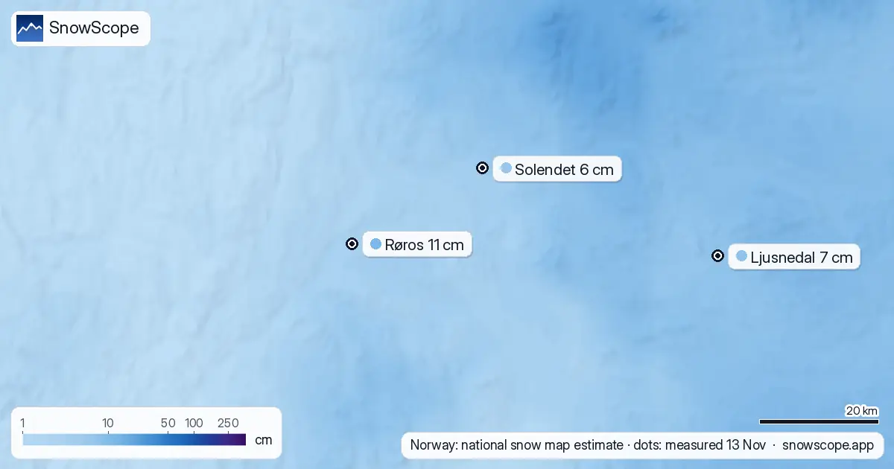

Snörapporter · Skandinavien
Skandinavien: De senaste 72 timmarna fick Breimsbygda Skisenter mest nysnö: cirka 60 cm. Även Jølster Skisenter (60 cm), Myrkdalen (57 cm) och …
Nysnö i Skandinavien: 60 cm i Breimsbygda Skisenter på 72 timmar (16 november)

De senaste 72 timmarna fick Breimsbygda Skisenter mest nysnö: cirka 60 cm. Även Jølster Skisenter (60 cm), Myrkdalen (57 cm) och Harpefossen skisenter (56 cm) fick nysnö.
Där snön ligger djupast
Vill du ha djup snö är Breimsbygda Skisenter (Norge) platsen i dag, måndag: runt 50 cm uppe på berget. Tvåa och framåt: Myrkdalen (49 cm) och Harpefossen skisenter (46 cm).
Nysnö förändras snabbt: vinden packar den på öppna sluttningar och mildluft gör den tung, så det bästa finns oftast första morgonen efter snöfallet, i skogen och på fjällets skyddade sida.
Snö i Skandinavien den 16 november: Breimsbygda Skisenter cirka 50 cm på de övre backarna, 332 av 423 skidorter med snö, och vad som är på väg.

Snö i Skandinavien den 16 november: Riksgränsen cirka 173 cm på de övre backarna, 332 av 423 skidorter med snö, och vad som är på väg.

Snö i Himos i mitten av november 2026: väderstationerna runt Jämsä mätte 0 till 2 cm den 13 november; förstasnöslingan för längdåkning öppnar 14 november, backarnas öppningsdatum är inte satt. Regnrisk i veckan och 46 tidigare vintrar.

Snörapport för Lofsdalen i mitten av november 2026: stationen på Häggberget på 682 m mätte 6 cm den 12 november, dalstationerna 7 till 8 cm den 13 november; runt 7 cm till väntas utan regn, öppning 11 december, 46 tidigare vintrar.

Snöläget i Narvikfjellet i mitten av november 2026: Norges nationella snökarta visar runt 50 cm på 1 110 m och 35 cm på 844 m men nästan inget vid fjorden; närmaste svenska station i Katterjåkk mätte 9 cm. Veckan framåt och 46 tidigare vintrar.

Guide till hundspann i Røros vintern 2026-27: runt 5 till 6 cm snö enligt Norges nationella snökarta, kennlar som Destination Røros listar med priser, hundspannsloppet Femundløpet i februari 2027 och reglerna för din egen hund nära tamrenar.

Snö i Romme Alpin i mitten av november 2026: Borlänge mätte 4 cm, Ludvika 10 cm och Falun 0 cm den 13 november; regn i veckan; säsongen startar 19 december på konstsnö. Vad 46 tidigare vintrar säger om natursnön här.

Snöläget i Beitostølen i mitten av november 2026: runt 10 till 13 cm i hela området enligt Norges nationella snökarta, 10 cm till väntas i veckan utan regn, och hur 46 tidigare vintrar brukar se ut i den höga byn.

Snöläget i Vuokatti i mitten av november 2026: stationerna i Sotkamo mätte 0 cm den 13 november, Kajana 1 cm; runt 9 cm väntas i veckan men en del som regn; backarna siktar på att öppna 4 december. 46 tidigare vintrar.

Snöläget i Branäs i mitten av november 2026: stationen i Kindsjön på 425 m mätte 27 cm den 13 november, Letafors 17 cm, Östmark i dalen 0 cm. Risk för regn i veckan, öppning 11 december, 46 tidigare vintrar.

Snödjup på Norefjell i mitten av november 2026: Norges nationella snökarta hoppade från runt 4-5 cm till 15-20 cm på en natt, med ungefär 45 cm på högplatån. Veckan framåt, regnrisk längst ner och 46 tidigare vintrar.

Snödjup i Tahko i mitten av november 2026: backsäsongen öppnade den 13 november med 2 av 14 liftar, på konstsnö; stationerna runt omkring mätte 0 cm efter att ett kort snötäcke på 2 till 4 cm smälte. Veckan framåt och 46 tidigare vintrar.

Snö i Funäsdalsfjällen i mitten av november 2026: stationen i Ljusnedal mätte 7 cm den 13 november, Tänndalen har öppet på en liten yta, Ramundberget öppnar 19 december. Veckan framåt och 46 tidigare vintrar.

Guide till huskyturer och hundar i Rovaniemi vintern 2026-27: väderstationerna mätte 7 till 8 cm den 13 november, stadens första skidspår har öppnat, tre huskygårdar som Visit Rovaniemi listar med datum och priser, dagsljus och reglerna för din egen hund.

Snödjup i Myrkdalen i mitten av november 2026: Norges nationella snökarta visar runt 14 cm i backarna och 33 cm på 1 333 m; vår prognos ger ungefär 44 cm på toppen på sju dagar. 46 tidigare vintrar för slutet av november.

Guide till hundspann i Kiruna vintern 2026-27: väderstationen i Kiruna mätte 0 cm snö den 13 november, arrangörer som Kiruna Lappland listar med säsong och priser, korta dagar och reglerna för din egen hund i skidspår, renbetesland och Abisko nationalpark.

Snörapport för Saariselkä i mitten av november 2026: väderstationen i Saariselkä mätte 4 cm den 13 november, oförändrat i en vecka; runt 22 cm väntas på sju dagar utan regn; backarna siktar på att öppna 21 november.

Snörapport för Riksgränsen och Björkliden i mitten av november 2026: stationen i Katterjåkk mätte 9 cm och Abisko 2 cm den 13 november, veckan framåt, varför liftarna öppnar först i februari och 46 tidigare vintrar.

Snörapport för Hafjell i mitten av november 2026: runt 2 cm nära toppen och inget nertill enligt Norges nationella snökarta, 9 cm väntas på toppen i veckan med regn längre ner, och hur 46 tidigare vintrar brukar se ut i slutet av november.

Den 13 november 2026 mätte väderstationerna i Stockholm och Helsingfors 0 cm snö medan Sälen hade 45 cm och Umeå 20 cm. Höjden, havet, staden och ovädrens väg förklarar det, med siffror från 46 tidigare vintrar.

Snödjup i Pyhä-Luosto i mitten av november 2026: väderstationerna runt fjällen mätte 0 till 9 cm den 13 november, under det normala; runt 23 cm väntas i veckan utan regn. Öppningsplaner och 46 tidigare vintrar.

Snöläget i Vemdalen i mitten av november 2026: svenska väderstationer runt Vemdalsskalet och Björnrike mätte 6 till 12 cm den 13 november efter två snöiga dagar, runt 8 cm till i veckan, öppningsplaner och 46 tidigare vintrar.

Snöprognos för Voss i mitten av november 2026: Norges nationella snökarta visar runt 20 cm på 1 348 m och nästan inget i stan, vår prognos ger ungefär 35 cm på toppen av Voss Resort på sju dagar med regn under runt 600 m, plus 46 tidigare vintrar.

En praktisk guide till hundspann runt Tromsø vintern 2026-27: vilka huskygårdar turistorganisationen listar, när snösäsongen börjar, vad en tur kostar, polarnatten och reglerna för att gå ut med din egen hund i snön och nära renar.

Snödjup i Kläppen i mitten av november 2026: väderstationen i Sälen, 13 km bort, mätte 45 cm den 13 november efter 11 cm dagen innan; anläggningen rapporterar 25 cm. Regnrisk i veckan, öppning 11 december, 46 tidigare vintrar.

Hundägare i Bergen, helgen 14 november 2026: barmark på Florida på fredagen, 5 cm bara uppe på Kvamskogen och en mycket blöt söndag. Bergens koppelregler året runt, de fyra inhägnade hundgårdarna och lederna på Fløyen.


Luleå den 13 november 2026: stationen vid Kallax flygplats skickade inget snödjup i dag, men stationerna runt staden mätte 3 till 7 cm, allt nytt sedan torsdagen, och mer snö faller på fredagen.

Hundägare i Oslo, 13 november 2026: 4 cm snö på Blindern, 31 cm vid Bjørnholt och 37 cm på Tryvannshøgda. Var hunden får springa lös, vad koppelreglerna säger i november och en kall, torr lördag.

Uppmätt snö i Uleåborg den 13 november 2026: 7 cm i Kaukovainio, 5 cm på Karlö, 8 cm i Ruukki, allt nytt sedan torsdagen. Lite mer på väg före måndagens töväder.

Uppmätt snö i Rovaniemi den 13 november 2026: 7 cm vid flygplatsen, 8 cm i Apukka. Nära, men lite under, en vanlig mitt i november, med en kall och snöig helg på väg.

Hundägare i Stockholm, 13 november 2026: 0 cm snö uppmätt i stan, närmaste 2 cm ligger 75 km norrut. Var hunden får springa lös i Stockholm, reglerna i naturreservaten och en torr helgprognos.


Tammerfors den 13 november 2026: 0 cm i Tottijärvi och vid stationerna runt staden, 2 cm i Hyytiälä åt nordost. I hälften av vintrarna var Tammerfors vitt den 10 november. Ett spår av blötsnö på lördag.

Uppmätt snö i Tromsø den 13 november 2026: 6 cm vid stadens station på ön, 44 cm på 710 m i Lyngen, 3 cm i Bardufoss. Nära det normala för datumet, och en mycket kall helg framför sig.


Trondheim den 13 november 2026: inget snödjup rapporterat i staden, barmark i Ørland, 5 cm i Meråker, 18 cm i Tågdalen, 11 cm i Røros. Vad som är normalt i mitten av november, och en mild, blöt helg.

Uppmätt snödjup i Finland den 13 november 2026: 58 av 161 stationer vita, nästan alla norr om 64:e breddgraden, den djupaste bara 13 cm i Kilpisjärvi. Söder, Helsingfors och Tammerfors inräknade, är bar.

Snöläget i Ylläs i mitten av november 2026: väderstationerna runt Ylläs mätte 0 till 2 cm den 13 november, långt under det normala; runt 23 cm snö väntas i veckan utan regn, och backarna siktar på att öppna 21 november.

Snöläget i Kvitfjell i mitten av november 2026: runt 5 cm i de övre backarna och 3 cm nertill enligt Norges nationella snökarta, ungefär 10 cm väntas högt upp i veckan, och vad 46 tidigare vintrar säger om slutet av november och december.

Uppmätt snö runt Östersund den 13 november 2026: 19 cm på Norderön, 24 cm i Marby, 33 cm i Rissna. Tre till fyra gånger det vanliga snödjupet för datumet, med en kall och torr helg framför sig.

Uppmätt snödjup i Norge den 13 november 2026: 37 cm på Tryvannshøgda ovanför Oslo, 44 cm i Lyngen i Troms, 10 till 18 cm i inlandsdalarna, barmark i Bergen, Trondheim och inre Finnmark.

Snödjup i Helsingfors den 13 november 2026: 0 cm i Kajsaniemi, Gumtäkt, Hagalund, Helsingfors-Vanda och Noux. Det vanliga datumet för första snön och en helgprognos som håller staden grå.

Umeå mätte 20 cm snö den 13 november 2026, från barmark i onsdags. Så ser det ut vid stationerna runt staden, varför det är tidigt och om snön klarar måndagens regn.

Snödjup i Kiruna den 13 november 2026: 0 cm vid stationen i stan, i Jukkasjärvi och vid Esrange. I vår snöhistorik över 46 vintrar hade stan alltid snö det här datumet. Vad helgen ger.

Uppmätt snödjup i Sverige den 13 november 2026: 133 av 322 stationer vita, ett bälte från Dalarna till Västerbotten med upp till 45 cm, ett bart söder och ett nästan bart längsta norr runt Kiruna.

Snödjup i Stockholm den 13 november 2026: 0 cm på Observatoriekullen och vid alla stationer runt staden. När snön brukar komma och varför helgen inte ger någon.

Uppmätt snödjup i Oslo den 13 november 2026: 4 cm på Blindern, 31 cm vid Bjørnholt och 37 cm på Tryvannshøgda. Hur en vanlig mitt i november ser ut och vad helgen gör med snön.

Uppmätt snö på marken den 13 november 2026 i Oslo, Bergen, Trondheim, Tromsø, Stockholm, Göteborg, Östersund, Umeå, Luleå, Kiruna, Helsingfors, Tammerfors, Uleåborg och Rovaniemi: från 20 cm i Umeå till barmark i Kiruna.